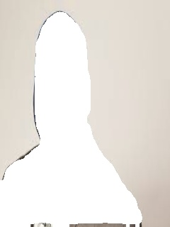

20141469 김 동 현
메 인 |
학 력 / 경 력 |
프 로 젝 트 |
주요 활동
github
사진에서 사람을 탐지해 지운뒤 뒷 배경을 채우는 inpainting (2020-03 ~ )
캡스톤 디자인에서 진행중인 프로젝트로 딥러닝을 사용해 사진의 사람을 segmentation해 사진에서 지운뒤
딥러닝을 사용해 그 빈공간을 예측하는 프로젝트를 진행중이다.
완성된 부분은 segmentation을 한뒤 사진에서 지운는 부분까지 완성되었다.
